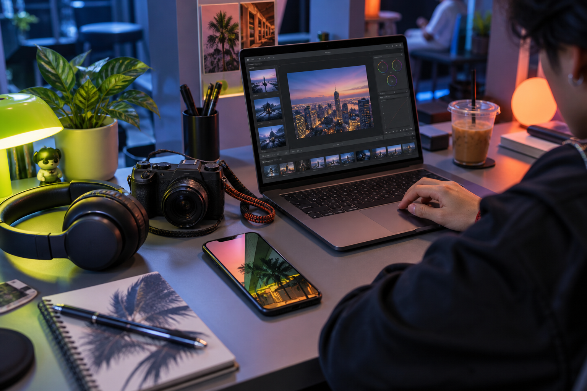

HAI!
Teknologi dalam bahasa kita
Malaysia · 2026
← Artikel terkini
Lebih banyak untuk diteroka
Seterusnya.
Digital
3 min
Masa reset algoritma feed
Gaming
4 min
Setup gaming bajet

Digital
4 min
Telefon saja cukup untuk mula jadi creator?